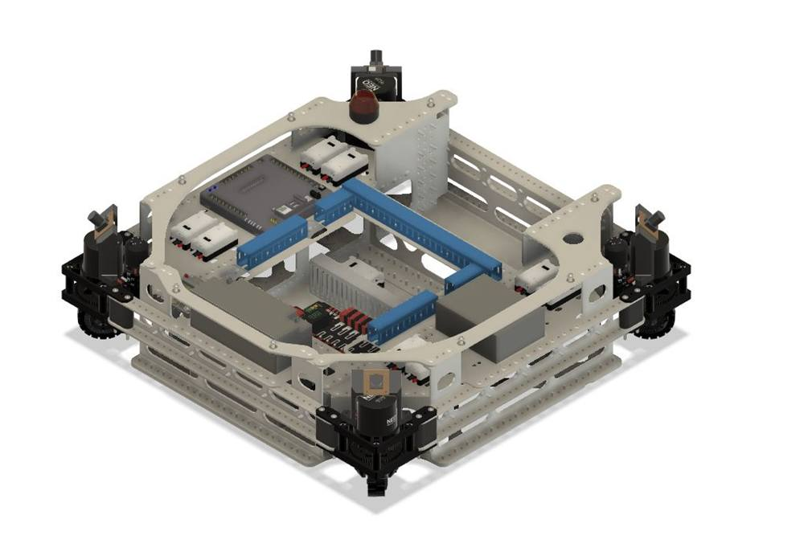

Swerve Traction Control
Wrote a simple traction-control system for an FRC swerve drivetrain. It detects wheel slip using only the drive-motor encoders, so it does not need any extra sensors.

How It Works
- Calculates wheel jerk from the drive-motor encoder data.
- Detects slip when the jerk passes a set threshold.
- Holds the last non-slipping module angle and acceleration until the wheel regains traction.
- Uses one small set of tuning values instead of a detailed drivetrain model.
Testing
The same tuning worked on slick concrete and carpet. In full-forward-to-reverse tests, the controller shortened the jerk spikes caused by wheel slip.